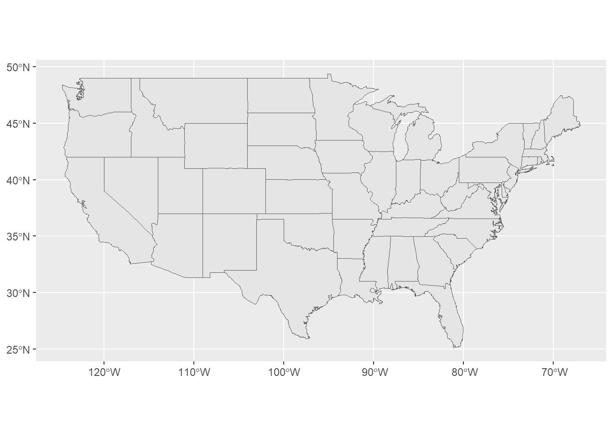

Warning: package 'googlesheets4' was built under R version 4.3.3
library(tidyverse)
── Attaching core tidyverse packages ──────────────────────── tidyverse 2.0.0 ──
✔ dplyr 1.1.4 ✔ readr 2.1.5
✔ forcats 1.0.0 ✔ stringr 1.5.1
✔ ggplot2 3.4.4 ✔ tibble 3.2.1
✔ lubridate 1.9.3 ✔ tidyr 1.3.1
✔ purrr 1.0.2
── Conflicts ────────────────────────────────────────── tidyverse_conflicts() ──
✖ dplyr::filter() masks stats::filter()
✖ dplyr::lag() masks stats::lag()
ℹ Use the conflicted package (<http://conflicted.r-lib.org/>) to force all conflicts to become errors
library(janitor)
Attaching package: 'janitor'
The following objects are masked from 'package:stats':
chisq.test, fisher.test
library(tidygeocoder)
Warning: package 'tidygeocoder' was built under R version 4.3.3
library(sf)
Warning: package 'sf' was built under R version 4.3.3
Linking to GEOS 3.11.2, GDAL 3.8.2, PROJ 9.3.1; sf_use_s2() is TRUE
library(leaflet)
Warning: package 'leaflet' was built under R version 4.3.3
Every year Monarch Butterflies fly south for the winter. They start in higher latitudes and migrate south to their wintering areas in Mexico.
Monarch Watch is a citizen science initiative housed in the University of Kansas. Every year volunteers tag these butterflies and release them so their progress in their southern migration can be mapped. If someone finds a monarch with a tag they can report it. We’ll examine only the Eastern Monarch’s trip south.
The reporting data is available online in the form of google sheets. It can be brought into R with the googlesheets4 R package. Pay attention to your console, google needs permission to download.
Import and Clean Data
The reporting data is available online in the form of google sheets. It can be brought into R with the googlesheets4 R package. Pay attention to your console, google needs permission to download.
# US and Canada DataUS_CAN_Recovery_2022 <-read_sheet("https://docs.google.com/spreadsheets/d/14ONbP-0rgvVz-DR0MWYkkPm0BzyFBHMiNCA2F5I8Yks/edit#gid=1710298744")
! Using an auto-discovered, cached token.
To suppress this message, modify your code or options to clearly consent to
the use of a cached token.
See gargle's "Non-interactive auth" vignette for more details:
✔ Reading from "Monarch Watch Tag Recoveries - Central Mexico".
✔ Range 'mexico-recoveries'.
# If you cannot get acces to the above data run these two lines in the console. Otherwise ignore this message# googlesheets4::gs4_deauth()# googlesheets4::gs4_auth()# The code below takes both of these dataframes and makes them into a list. data_frame_list <-list(US_CAN_Recovery_2022, Pre_2023_Mexico_Recovery)
There is an R object called a list. A list can store different types of objects like data frames, vectors, character values, etc.
List can be handy for storing and retrieving data. We will make a list called butterfly_dataframes and use it to do some data analysis.
# We need to clean the data we downloaded from google sheets. We can use clean_names() to do this. Since there are two dataframes we can clean them both at once. Use map() to do so. # Iterate over your function to clean the names and store the three dataframes as a list. butterfly_dataframes <-map(.x = data_frame_list ,#add the name of the list here,.f = clean_names #add the name of the function here. )# At the moment butterfly_dataframes is unnamed which is inconvient so below I'm naming all the dataframes in the list. names(butterfly_dataframes) <-c( "US_CAN_Recovery_2022", "Pre_2023_Mexico_Recovery")
Now work with the list butterfly_dataframes. To access the element in the list you want use the $.
# glimpse just one of the dataframes with $view(butterfly_dataframes$US_CAN_Recovery_2022)
I’d like to trace the paths of these butterflies on a map of the US. Each butterfly has a tag. So if the same tag is repeated multiple times we can follow its path.
Wrangle US_CAN_Recovery to get the top 7 most spotted butterflies 2022. The use pull() to save the most spotted tag codes as a vector so we can use it to filter later.
To map the butterfly sightings we need the location data for the top 7 butterflies. filter() for the top seven most seen butterflies, pipe that into select() to get the location of the city and state and finally pipe that information into geocode(). It takes geocode() sometime to produce lat and long data. Make sure your filtering works as expected before using geocode(). This will give us the lat and long on the city level.
Passing 10 addresses to the Nominatim single address geocoder
Query completed in: 10.2 seconds
# I made the US state map for you.USA_map <- maps::map("state", plot =FALSE, fill =TRUE) |>st_as_sf(coords =c("x", "y"), crs =4326)
Plot the map to make sure the lower 48 states are shown. Examine USA_map and become familiar with it.
# Map out USA_map here. USA_map |>ggplot()+geom_sf()

In the code chunk below add your top 7 butterflies, be sure to jitter them and make them orange.
# Make your top 7 butterfly map here. USA_map |>ggplot()+geom_sf()+geom_sf(data= top_7_butterfly,size=3,color="orange")
This is not an exciting map, I only see 7ish dots, not seven butterflies travelling south. This shows the limits of citizen science. Not many people participate so the data is spotty.
Make a Chrolopleth map of the US and Canada.
Let’s see what we can learn when we plot all of the butterflies from 2022 at the same time. Let’s code it by the state level, as opposed to the city level to save time. Getting location at the state level will take geocode() 43 seconds instead of 8 minutes at the city level. Once you geocode your data you can use save() to save the data, and load() to load it back in when you render. You should comment out the geocoding and save function afterward, uncomment the load().
We would expect locations in the US with more people to have more sightings. So instead of plotting the overall sightings we’ll make a Chloropleth map that colors the sightings by state as a percentage of the total sightings.
We have to wrangle the data a bit. Make a df called butterfly_location_summary wrangle to find the following:
The total number of sightings per state
The total number of sightings in 2022
The proportion for each state
Then we need to join our data frame with USA_map to get the location data. I made a states df that has the states names and abbreviations in it to help with joining.
join the states df to the butter_location_summary
join the new df made above to USA_map, be sure to have US map on the left so you don’t lose simple features.
# Wrangle your databutterfly_location_summary <- butterfly_location_data |>group_by(state_province) |>summarise(total =nrow(x=butterfly_location_data),sighting=n(), #total sighting per state heretotal_prop= sighting/total)# total proportions# Here is a df with state abreviation and namesstates<-as.data.frame(cbind(abrev = state.abb, lower_state =tolower(state.name), upper_state = state.name))#First joinfull_joined_df <-full_join(states, butterfly_location_summary, by=c("abrev"="state_province"))#Second join Inner join to get the location data. Call the resulting dataframe USA_map_joined.USA_map_joined <-inner_join(USA_map, full_joined_df, by=c("ID"="lower_state"))
Great! Let’s make our map. Also pick the “YlOrRd” color palette, the default one doesn’t conjure up images of Monarchs. Make sure darker means more. I added some themes to make things nicer
# Make map here.# The code below set a color palette and changes the background color. Orange colors for butterflys and light blue for the background the make the points pop. I also turned off the grid lines. USA_map |>ggplot()+geom_sf()+geom_sf(data= USA_map_joined, aes(fill= sighting, color ="black"))+scale_fill_distiller(palette="YlOrRd", direction=1)+labs(title="Butterfly Sightings by State")+theme_minimal() +theme(panel.background =element_rect(fill ="azure2",colour ="black",size =0.5),panel.grid.major =element_blank(), panel.grid.minor =element_blank())
Warning: The `size` argument of `element_rect()` is deprecated as of ggplot2 3.4.0.
ℹ Please use the `linewidth` argument instead.